static sgCDimensions* sgCDimensions::Create(SG_DIMENSION_TYPE dimType, const SG_POINT* formed_points, const sgCFont* fnt, const SG_DIMENSION_STYLE& stl,const char* string)
Description:
Creates an object of the DIMENSIONS class of the specified type and with the specified font and style.
Arguments:
dimType - type of a dimensional object.
Can take the following values:
•SG_DT_LINEAR - linear dimension
•SG_DT_ANGLE - angle dimension
•SG_DT_RAD - radial dimension
•SG_DT_DIAM - diametral dimension
formed_points - array of the distinguished point the dimension is built on.
These points has the following meanings for various dimensions types:
The dimension itself is calculated as the distance between the first and the second points.
Dimension type |
Distinguished points |
Explanation |
Necessary number |
||||||||
Distant (linear) |
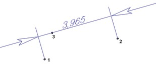 |
The dimension itself is calculated as the distance between the first and the second points. 3. The third point is an arbitrary point on the dimensional line. |
3 |
||||||||
Angle |
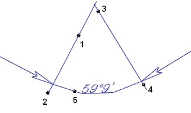 |
The dimension itself is calculated as the angle between two these line segments.
5. The fifth point is an arbitrary point on the dimensional line. |
5 |
||||||||
Radial |
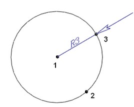 |
The dimension itself is calculated as the distance between the first and the second points. 3. The third point is an arbitrary point on the dimensional line.
|
3 |
||||||||
Diametral |
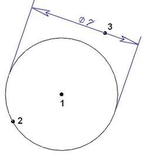 |
The dimension itself is calculated as the double distance between the first and the second points. 3. The third point is an arbitrary point on the dimensional line.
|
3 |
The number of points for each object type given in the table above is a requirment for creating an object.
fnt - pointer to a font (read more about fonts - sgCFont) to write the text with
stl - dimension style structure.
This structure is described in sgTD.h and has the following fields:
typedef struct
{
bool dimension_line;
bool first_side_line;
bool second_side_line;
double lug_size;
bool automatic_arrows;
bool out_first_arrow;
unsigned char first_arrow_style;
bool out_second_arrow;
unsigned char second_arrow_style;
double arrows_size;
SG_TEXT_ALIGN text_align;
SG_TEXT_STYLE text_style;
bool invert;
SG_DIMENSION_BEHAVIOUR behaviour_type;
unsigned short precision;
} SG_DIMENSION_STYLE;
dimension_line - sign showing that the dimensional line is present (above the text line)
first_side_line - sign showing that the first extension line is present
second_side_line - sign showing that the second extension line is present
lug_size - lug size of extension lines above arrows
automatic_arrows - sing of arrows position automatic calculation - inside or outside the dimension. If this structure field value is true, the arrows position is calculated automatically depending of the text length and arrows size. In this case the out_first_arrow and out_second_arrow fields are ignored.
out_first_arrow - whether the first arrow is outside the dimension (if the automatic_arrows field value is true the field is ignored)
out_second_arrow - whether the second arrow is outside the dimension (if the automatic_arrows field value is true the field is ignored)
first_arrow_style and second_arrow_style - arrows style.
The following styles are supported:
Field value |
Arrow type |
0 |
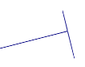 |
1 |
|
2 |
|
3 |
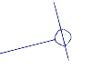 |
4 |
|
5 |
|
6 |
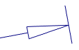 |
7 |
|
8 |
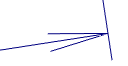 |
9 |
|
10 |
|
11 |
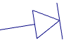 |
12 |
|
13 |
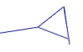 |
14 |
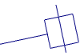 |
15 |
|
arrows_size - arrows size
text_align - text string position type on the dimensional line. Can have the following values:
SG_TA_CENTER - center text position,
SG_TA_LEFT - left text position,
SG_TA_RIGHT - right text position.
text_style - text style (read more about text style structure here)
invert - is necessary for angular dimensions (ignored in other cases). If the field value is true, the angle is added to 360 degrees
behaviour_type - is necessary for distant dimensions (ignored in other cases). Specifies the way of building the dimension by the third point (see the values table - formed_points). Has the following values:
SG_DBT_VERTICAL - dimensional line is construced with the vertical segment line projection between first two points
SG_DBT_HORIZONTAL - dimensional line is construced with the horizontal segment line projection between the first two points
SG_DBT_PARALLEL - dimensional line is constructed parallel to the segment line between the first two points
SG_DBT_SLANT - dimensional line is constructed parallel to the segment line between the first two points and the third point is its start (slanting dimensional line)
SG_DBT_OPTIMAL - optimum dimension is constructed between two points considering the third one
precision - dimensional string display accuracy (characters number after the point)
string - text string to be written on the dimensional line. Can be NULL - in this case the dimension value is written on the dimensional line with the accuracy specified in the corresponding field of the stl structure
Returned value:
Returns the pointer to the created object. If the function fails NULL is returned.
See also:
Objects hierarchy sgCObject methods